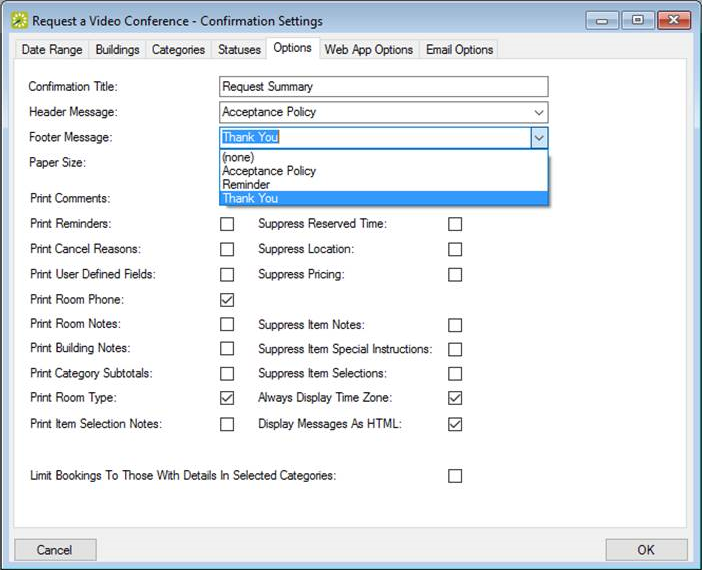

- Use the Options tab to set an email header and email footer for pre-configured messages (which you set under Configuration > Other > Messages).

- Use the Web App Options tab to specify if and where a URL to the Web App should be included in the confirmation. You can also include a Message to include with the URL in the confirmation. See Also: Configure the Confirmation Email Subject Line.